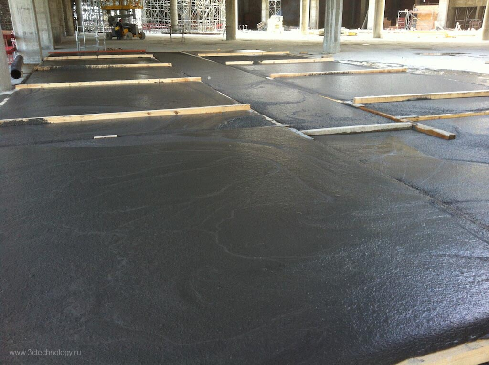
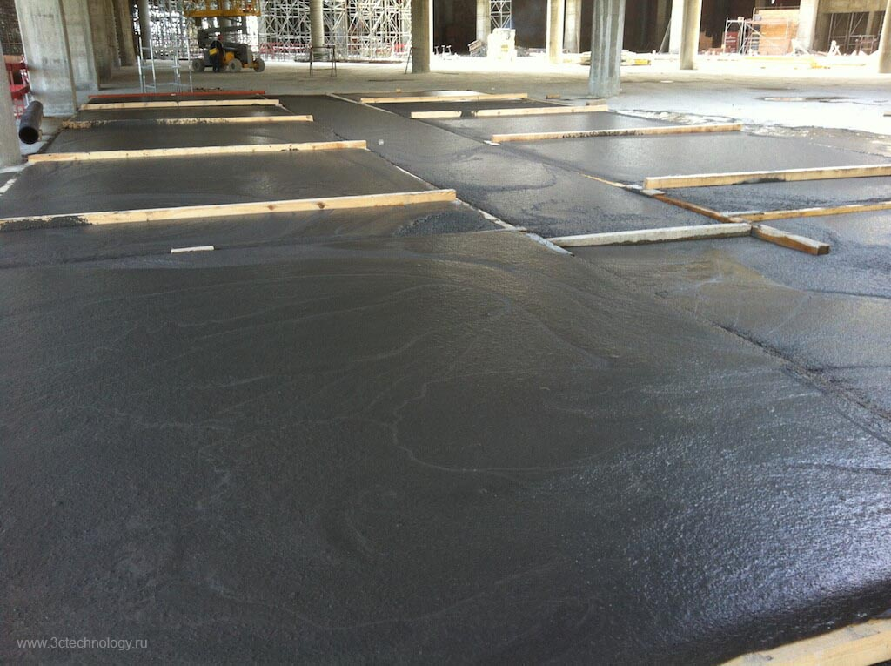

Кровля во многом определяет срок жизни здания. Газофибробетон «3С», обладающий хорошей теплоизоляцией, высокой морозостойкостью и легким весом, является весьма привлекательным материалом для устройства пологих кровель.
Для крутых крыш эффективно применение отлитых заранее плит.
Ключевые качества:
- Легкий вес (200-300 кг/м³);
- Объём. Из 1 тонны сухой смеси выходит 4-5 м³ бетона;
- Высокая морозостойкость. Свыше 100 циклов разморозки/заморозки;
- Отличная теплоизоляция. Низкая теплопроводность: < 0.08 Вт/мK*℃;
- Начальная прочность на сжатие 0.5-1 мПа. Прочность будет увеличиваться в течении всего срока службы, т.к. газофибробетон «3С» неавтоклавный, т.е. естественного твердения;
Устройство кровель с использованием «3С» технологии позволяет заменить традиционный «пирог» из «горячих» рулонных материалов.
Полы из газофибробетона «3С» позволяют решать многоцелевую задачу, т.к. газофибробетон «3С» - надежный тепло и звуко изолятор, водоустойчивый и легкий конструкционный материал.
Полы из «3С» экологичны, оптимально гигиеничны (после дерева) и пожаробезопасны. Газофибробетон «3С» абсолютно безопасен для здоровья.
Полы из «3С» изолируют трубы, электропроводку и кабеля, при этом оставляя их ремонто пригодными.
Технология «3С» позволяет свести в один рабочий цикл несколько циклов по выполнению других многослойных конструкций, при этом существенно удешевить эти конструкции.
Ключевые качества:
- Легкий вес (500-600 кг/м³);
- Объём. Из 1 тонны сухой смеси выходит 2 м³ бетона;
- Отличная теплоизоляция. Низкая теплопроводность: < 0.12 Вт/мK*℃;
- Начальная прочность на сжатие 2-3 мПа. Прочность будет увеличиваться в течении всего срока службы, т.к. газофибробетон «3С» неавтоклавный, т.е. естественного твердения;
- Экологически чистый. Не содержит вредных компонентов;
Газофибробетон «3С» можно использовать в полах, заменяя все слои, кроме финального слоя. Года эксплуатации полов, сделанных из ячеистых бетонов, доказали свою эффективность в жилых домах, офисах и промышленных зданиях, также как и в помещениях для скотоводства.

 

Использование газофибробетона «3С», полученного из сухой смеси «3С», особенно эффективно при строительстве дорог на слабых грунтах! При его применении нет необходимости в полной выборке слабого грунта до твердой почвы и замене его на скальный грунт, что позволяет резко сократить стоимость строительства.
Высокая производительность, большие объемы и простота получения газофибробетона «3С» по сравнению с пенобетоном, позволяет значительно сократить время работ.
Бетон «3С» имеет малый вес (300 - 400 кг/м³) и является монолитом с достаточной прочностью. Бетон укладывается непосредственно на слабый грунт и создает эффект «понтона», на который укладываются последующие слои дорожной одежды. Стоимость данной технологии намного меньше (более чем в два раза) по сравнению с существующими! Такая дорога имеет стабильность в сейсмических районах, а также обеспечивает изоляционные свойства (капиляропрерывание, отсутствие морозного пучения, уменьшение промерзания грунта).
Преимущества газофибробетона «3С» при строительстве дорог:
- капиляропрерывание. «3С» снижает влияние влаги на конструкцию (морозное пучение). «3С» создает довольно жесткое основание, что увеличивает сроки жизни дорог;
- снижение расходов. «3С» уменьшает вес конструкции, при этом резко уменьшается толщина дорожной одежды и ее стоимость;
- легкость применения. «3С» имеет жидкую консистенцию и на него не влияет шероховатость поверхности;
- защита при плохих погодных условиях. «3С» защищает основание от размягчения при выпадении осадков и при замерзании почвы;
- уменьшение побочного ущерба. Уплотнение сыпучих материалов может нарушить и ослабить почву основы. «3С» разливается в жидком виде, соответственно нет необходимости прессования или вибрирования.
Сравнение стоимости дороги при устройстве дорожной одежды на слабом основании
Для сравнения рассмотрим варианты:
- Традиционная дорожная одежда, применяемая на слабом грунте;
- Конструкция дорожной одежды с применением ячеистого бетона;
В связи с тем, что стоимость материалов, местоположение карьеров, дальность перевозки, расценки на работы и т.д. в разных регионах различны, сравнение проведем по объёмам используемых материалов на 1 м² дорожной одежды.
| Конструкция дорожной одежды | Толщина, м | 1 тип дорожной одежды объем, м³ | 2 тип дорожной одежды объем, м³ |
|---|---|---|---|
| Асфальтобетонное покрытие | 0,125 | 0,125 | 0,125 |
| Щебеночное основание | 0,150 | 0,150 | 0,150 |
| Скалистый грунт | 4,85 | 4,85 | нет |
| Газофибробетон «3С» | 0.65 | нет | 0.65 |
| Объем выбираемого грунта (торф) | 5 | 0.95 |
Из таблицы видно, что применение газофибробетона «3С» уменьшает объем вынимаемого грунта (торфа) в 5 раз!
Газофибробетон «3С» очень широко применяется при строительстве тоннелей. При открытом способе прокладке линий метро и тоннелей в качестве обратной засыпки он просто не имеет альтернативы! Газофибробетон «3С», в отличии от грунта, имеет малый вес (300-400 кг/м³), имеет достаточную прочность, низкую теплопроводность и является монолитным. Все перечисленные характеристики не дают грунту просесть, резко уменьшают давление на конструкцию тоннеля и уменьшают до минимума глубину промерзания. При закрытом способе прокладки он применяется для заполнения пустот образовавшихся при прокладке тоннелей.

Газофибробетон «3С» идеально подходит при строительстве или реконструкции подходов к мостовым сооружениям. Используя «3С» в качестве подстилающего слоя, можно резко снизить нагрузку на подходы к мосту. Особенно это важно при сопряжении моста с насыпью и засыпкой береговых устоев. Простота заливки, монолитность, прочность и легкий вес делают газофибробетон «3С» отличной альтернативой уплотненному грунту или другим традиционным методам строительства.

В портах и на причалах газофибробетон «3С» возможно использовать при обратной засыпке при устройстве шпунтовых ограждений. Газофибробетон «3С» легкий, прочный, не боится влаги и не подвержен деформациям.
Газофибробетон «3С» может применяться на объектах добычи и переработки нефти и газа. Традиционные наполнители обратной засыпки для резервуаров включают слой песка. Этот слой оседает поднимается, рассыпается. В этих случаях приходится предпринимать корректирующие мероприятия.
Основания и обратные засыпки с применением газофибробетона «3С» не подвержены этим недостаткам.

Ha объектах добычи и переработки нефти и газа технология «3С» может применяться также при изоляции трубопроводов, закупорки скважин, обустройстве месторождений, заполнении пустот, укреплении подпорных стен и т.д.

Трубопроводы для воды, пролегающие на уровне замерзания почвы, должны быть изолированы. При выборе изоляционного материала принимают во внимание и его долговечность. Известно, что пена очень быстро стареет, и это накладывает ограничение в ее использовании. Технология ЗС проста, обладает термоизоляционными свойствами, водостойкостью и большой прочностью, что делает ее идеальной для использования в изоляции трубопроводов.
Подпорными стенками принято называть искусственные сооружения, предназначенные для поддержания засыпанного за них грунта или какого-либо другого сыпучего материала от обрушения.
Подпорные стенки применяются в самых различных областях строительной практики. Строительство дорог на косогоре, устройство набережных, которые удерживают грунт от оползания в реку. Многие части сооружений, одновременно с выполнением своих основных функций, играют роль подпорных стен. Такими конструкциями являются береговые опоры мостов, стены подвальных помещений, шпунтовые крепления стен, котлованов и др. Подпорная стенка, удерживая грунт, испытывает активное давление этого грунта. Активное давление стремится опрокинуть стенку. Активное давление зависит от объемного веса грунта. Объемный вес грунта в среднем составляет 2700 кг/м³ в плотном состоянии. Заменив его на газофибробетон «3С» с объемным весом 400 кг/м³, мы уменьшаем давление в 7 раз, со всеми вытекающими преимуществами.
Карстовые пустоты образуются в грунтах, содержащих каменную соль, гипс и другие растворимые вещества. Вода растворяет и уносит с собой частицы этих веществ, образуя в грунте каналы и пещеры. Для предупреждения провалов земляного полотна в зависимости от причин, которые могут их вызвать, не укрепленные или плохо укрепленные горные выработки, расположенные вблизи земляного полотна, по традиционной технологии засыпают или укрепляют камнем или забивают грунтом.
Газофибробетон «3С» при затворении водой имеет консистенцию краски и легко заполняет существующие пустоты. При созревании «3С» увеличивает свой объем до 3.5 раз, заполняя полностью всю пустоту, включая обратные углы! Материал не боится воды и имеет достаточную прочность для предотвращения дальнейшего проседания грунта.
Нашей компанией разработана уникальная технология производства стеновых панелей «3С». Данная технология позволяет ещё больше сократить сроки малоэтажного строительства на строительных площадках. Бригада из 3 человек с помощью грузовой автомашины с манипулятором, может возвести дом 200 м² (коробку) из стеновых панелей «3С» за 1 неделю.
Особенности конструкций стеновых панелей «3С» (угловые, простеночные, оконные и т.д.) разработаны таким образом, что при их монтаже образуются каналы по всему периметру стеновой панели, что позволяет, произвести закладку связующей арматуры с последующей заливкой внутреннего пространства каналов бетоном «3С», который готовится из сухой смеси «3С» прямо на строительной площадке. В итоге получается полное «омоноличивание» мест стыков панелей, что позволяет избежать мостиков холода как при обычном строительстве.
Конструктив дома, начиная от стен, оконных и дверных проёмов, вентиляционных шахт, дымоходов, плит перекрытий, пола и межкомнатных перегородок продуман до мелочей и изготовляется полностью из стеновых панелей «3С», блоков «3С» и бетона «3С», то есть из одного материала – сухой смеси «3С».
Оборудование и технологию производства стеновых панелей «3С» поставляем отдельно в дополнение к заводу по производству сухой смеси «3С» по запросу.
Газофибробетон «3С», полученный из сухой смеси «3С» позволяет построить дом до 3-х этажей включительно, не прибегая к использованию других бетонов и материалов. Достаточно только регулировать плотность материала. Такой дом можно построить в любом месте, нужно только доставить смесь на площадку и подобрать смеситель.
Дом, построенный по технологии «3С», высотой в 2 этажа, возводится за 3 недели с отделкой. Так как газофибробетон «3С» обладает низким коэффициентом теплопроводности, дом не требует дополнительного утепления полистиролом или минеральной ватой. В таком доме летом прохладно, а зимой - тепло!
Дома, построенные из газофибробетона «3С» абсолютно экологически чистые, что подтверждено российскими и европейскими гигиеническими сертификатами.

Воплотить мечты об индивидуальности собственного дома, многоэтажного здания, офисного или торгового центра помогут архитектурные элементы, выполненные из газофибробетона «3С». Особенно выгодно отличается применяемый материал при создании архитектурных элементов на фасадах зданий и дворовой, садовой территории, т.е. непосредственно на воздухе.
В отличии от существующих технологий, такие элементы обладают рядом существенных преимуществ:
- легкий вес;
- влагостойкость;
- высокая морозостойкость;
- идеальное сохранение формы и размеров;
- быстрота и простота изготовления;
- воплощение самых невероятных замыслов архитектора;
- устойчивость к химическим и бактериологическим воздействиям;
- долговечность;
- отсутствие запахов.